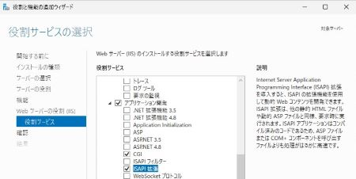
▲IISを追加した後、「サーバの役割」から「CGI」および「ISAPI拡張」もオンにする
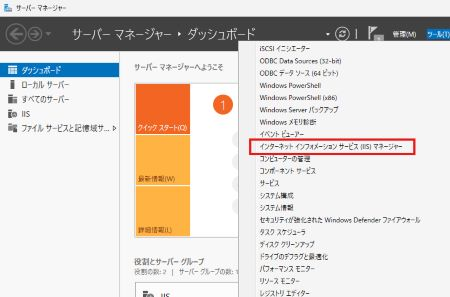
▲インターネットインフォメーションサービス（IIS）マネージャーの起動（2012 R2 / 2016 / 2019 / 2022 / 2025 の場合）
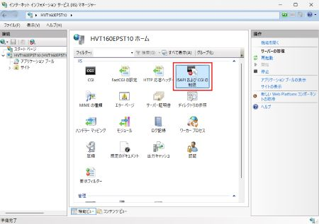
▲インターネットインフォメーションサービス（IIS）マネージャー
「機能ビュー」より「ISAPIおよびCGIの制限」をダブルクリック（2012 R2 / 2016 / 2019 / 2022 / 2025 の場合）
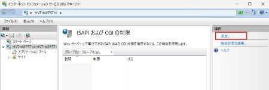
▲「操作」パネルより「追加...」をクリック
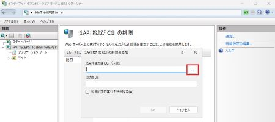
▲「ISAPIおよびCGIの制限の追加」ダイアログボックスが表示されるので
「ISAPIまたはCGIパス」項目にある「参照」ボタンをクリック
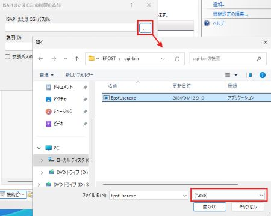
▲"C:\Program Files\EPOST\cgi-bin"フォルダを開き、
拡張子*.exeのファイルを参照、表示される"EpstUser.exe"を選択する
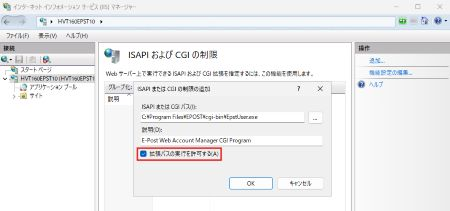
▲ファイル選択後のフルパス表記を確認し、CGIプログラムの
「説明」を画面例の通り入力、「拡張パスの実行を許可する」
チェックボックスをオンにして、最後に「OK」ボタンクリック
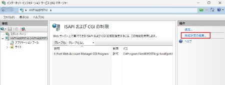
▲追加したCGIプログラムに対し、「操作」パネルより「機能設定の編集」をクリック
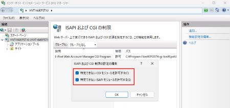
▲「ISAPIまたはCGI制限の設定の編集」ダイアログボックスが表示されるので、
「特定できないCGIモジュールを許可する」および「特定できないISAPIモジュ
ールを許可する」チェックボックスをオンにして、最後に「OK」ボタンクリック
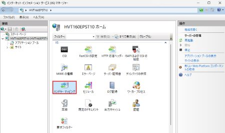
▲「機能ビュー」より「ハンドラマッピング」をダブルクリック（2012 R2 / 2016 / 2019 / 2022 / 2025 の場合）
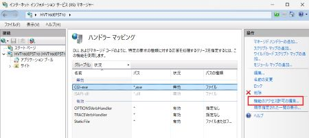
▲"CGI-exe"を選択し、「操作」パネルより「機能のアクセス許可の編集」をクリック
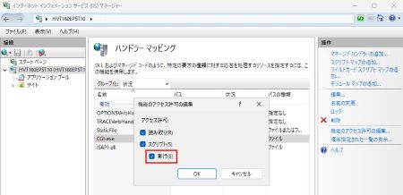
▲「機能のアクセス許可の編集」ダイアログボックスが表示されるので、
いちばん下の「実行」チェックボックスもオンにして、「OK」ボタンをクリック
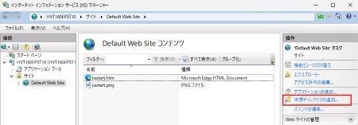
▲[Default Web Site]を選択し、「コンテンツビュー」に切り替え、
「操作」パネルより「仮想ディレクトリの追加..」をクリック（2012 R2 / 2016 / 2019 / 2022 / 2025 の場合）
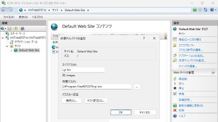
▲表示される「仮想ディレクトリの追加」ダイアログボックスでは、
「エイリアス」として"cgi-bin"を入力、「物理パス」としてCGIプログラムの
格納フォルダである"C:\Program Files\EPOST\cgi-bin"を参照して入力
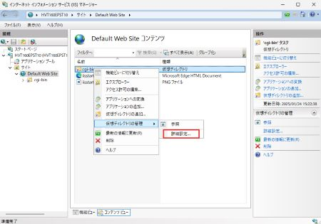
▲「コンテンツビュー」に切り替え、仮想ディレクトリ"cgi-bin"を選択し右クリック、
表示されるメニューより「仮想ディレクトリの管理」−「詳細設定...」を選択
（2012 R2 / 2016 / 2019 / 2022 / 2025 の場合）
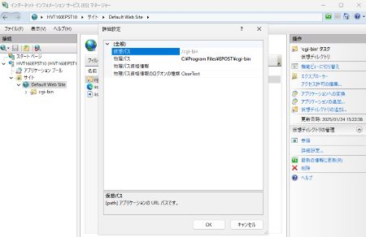
▲表示される「詳細設定」ダイアログボックスで割り当てられていることを確認
（2012 R2 / 2016 / 2019 / 2022 / 2025 の場合）
※64bit版では、"C:\Program Files\EPOST\cgi-bin"フォルダ
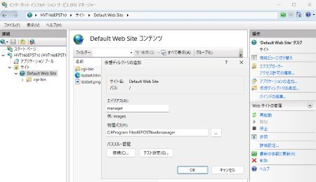
▲仮想ディレクトリ"manager"を同様の手順で追加
※仮想ディレクトリ"cgi-bin"の下に作成されないよう注意
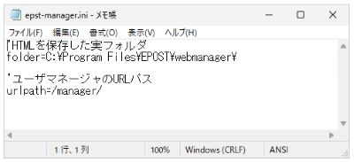
▲"cgi-bin"実フォルダ下にある"epst-manager.ini"ファイルの内容を
メモ帳で確認し、必要な場合は修正する
1行目は実際にhtmlファイルが保管されている物理フォルダ位置
例・"C:\Program Files\EPOST\webmanager\"
2行目はWeb管理ユーザーマネージャーを呼び出すURLパス
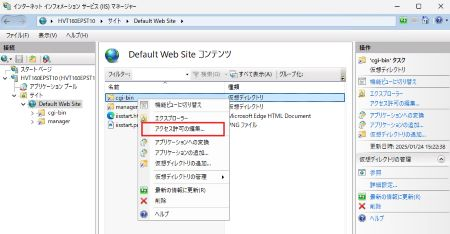
▲「コンテンツビュー」で、仮想ディレクトリ"cgi-bin"を選択し右クリック、
表示されるメニューより「アクセス許可の編集...」を選択（2012 R2 / 2016 / 2019 / 2022 / 2025 の場合）
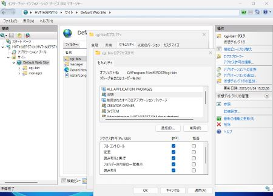
▲「cgi-binのプロパティ」ダイアログボックスより「セキュリティ」タブに切り替え、
「編集」ボタンをクリック、続いて表示される「アクセス許可」ダイアログボックスより、
インターネットゲストアカウント（IUSR）を追加、「フルコントロール」「変更」チェック
ボックスをオンに設定、“フルコントロール”のアクセス許可権限を与える
（2012 R2 / 2016 / 2019 / 2022 / 2025 の場合）
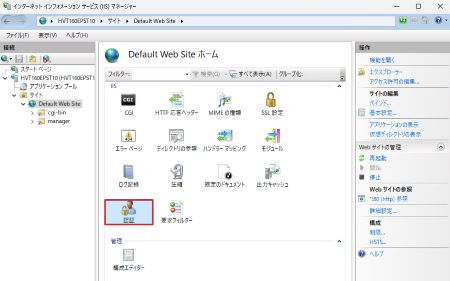
▲「機能ビュー」に切り替え、「認証」をダブルクリック（2012 R2 / 2016 / 2019 / 2022 / 2025 の場合）
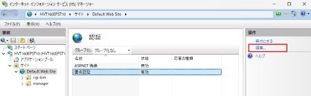
▲「匿名認証」を選択し、「操作パネル」の「編集..」をクリック
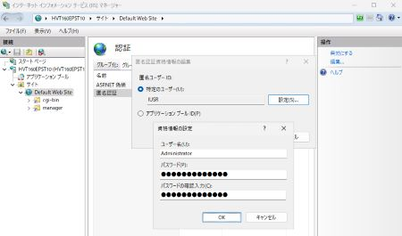
▲「匿名認証編集」ダイアログボックスが表示されるので、「特定のユーザー」選択状態で
「設定」ボタンをクリックし、表示されるダイアログボックスでAdministratorアカウントと
パスワードを入力、「OK」ボタンを続けてクリックする（2012 R2 / 2016 / 2019 / 2022 / 2025 の場合）
以上の手順で、AdministratorアカウントでCGIプログラムを実行できる設定となる
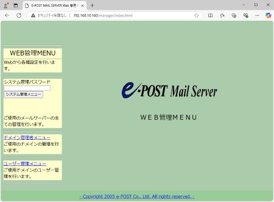
▲最後にブラウザを起動し"http://[IPアドレス]/manager/index.html"
または "http://localhost/manager/index.html" に接続して
左側のフレームを含む操作画面が表示されるようになれば設定完了
{kind=link}
{kind=link}
{kind=link}
{kind=link}
{kind=link}
{kind=link}
{kind=link}
{kind=link}
{kind=link}
{kind=link}
{kind=link}
{kind=link}
{kind=link}
{kind=link}
{kind=link}
{kind=link}
{kind=link}
{kind=link}
{kind=link}
{kind=link}
{kind=link}
{kind=link}
{kind=link}
{kind=link}